STUDIO A. ／ F 組 · D2
DAY 2 / 3教育事業部 · 校園 B2B 銷售 ＋ MDM
上週把一堆表讀成判斷 ——
這週，讓它會留、會講、會重來。
這週，讓它會留、會講、會重來。
STUDIO A · AI 工作流導入 ｜ Day 2 / 3 —— 研究長成知識庫 · 報表長成簡報 · 流程長成 skill。
講師 余文皓
匯流顧問有限公司
2026 / 07 / 10
STUDIO A · AI 工作流導入 · F 組 · D2
BLOCK 0開場
上週做完就結束了 ——
這週，讓它不用重來。
這週，讓它不用重來。
開場 · 18 MIN
02
昨天的成果 → 今天升級往上三格
上週你做到這 —— 今天，往上三格。
面向
D1 · 上週你做到
D2 · 今天升級 ↑
研究 · 情報
手動查 —— 查完就散了
[研究]＋[歸檔]：建成知識庫，越查越聰明
交給主管
一頁 HTML 報表
Claude Design：設計級提案簡報
每週的數據活
一句 prompt —— 跑一次
包成 Skill：一句話，每週重跑
03
BLOCK 0 · D1 → D2 升級
你帶了什麼來D1 打下的三個地基
D1 那三件 —— 不是作業，是今天的地基。
01 · 搬進 Vault
Area + Project
就位了嗎？
就位了嗎？
工作環境擺好了 —— 之後 Claude 一進來協作，就有你的完整脈絡。
★ 02 · 做一件真的
跑過一遍
自己的數據了嗎？
自己的數據了嗎？
摸過 Claude 的能耐了 —— 它能在你電腦裡直接做數據分析、把結果生出來。
03 · 盤點工作流
Miro 那面牆
補完整了嗎？
補完整了嗎？
工作流想過一遍了 —— 哪一段，可以讓 Claude Code 進來接手。
沒全做完也沒關係
帶著你做出來的、還有卡住的地方 —— 今天我們就從這裡接著長。
04
BLOCK 0 · 作業驗收
抽 2 位分享說說你做的酷東西
抽 2 位 —— 說說你做的酷東西，打開給大家看。
抽一位分享
？
被抽到的，講這三個 ——
01 你做了什麼
拿哪份表？做出了什麼、原本要花多久？
02 哪一步最有感
Claude 幫你省掉的那一步 —— 是哪個？
03 哪裡卡住
卡在哪、還差一步 —— 誠實講，今天一起解。
05
BLOCK 0 · 抽人分享 · show 你的酷東西
BLOCK 0 → 第一幕研究
先做第一件事 ——
把一個提案，研究到位。
把一個提案，研究到位。
今天有個提案要交 —— 學校想導入 iPad + Apple Intelligence 教學方案，要你研究、提案。先讓 AI 把功課做完，把該查的一次查齊。
第一幕 · 研究 · 20 MIN
06
你的案例 · 情境學校要導入 AI
這就是你的任務 —— 學校要在 iPad 上導入 AI。
台中一所私立升學高中（約 800 生、主打升學）想用 iPad + Apple Intelligence 差異化招生 —— 主管把這案子交給你：先研究清楚，下週做提案簡報報給學校。
資料你手上沒有 —— 但學校等的，是這三題的答案。
學校要的三題
①有哪些教學功能、繁中能用嗎
②要哪種 iPad 才跑得動
③學生資料的資安隱私 OK 嗎
先讓 AI 把功課做完 —— 判斷還是你下。
07
第一幕 · 你的提案情境
Google 也進化了但只到表面
以前一頁頁看 —— 現在 Google 連 AI 摘要都給你了。
以前你得開十幾個分頁、一頁頁比對、還怕漏 —— 現在 AI 摘要直接整合、條列、附來源。
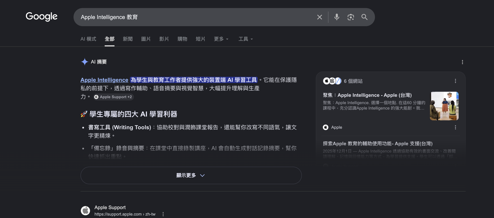
但它只到表面 —— 一份通用摘要，不認得你的學校，也不會替你挑出容易搞錯的細節。整理，不等於查對。
08
第一幕 · Google 只到表面
有更好的選擇它懂你在做什麼
一句 [研究] —— 它懂你的脈絡，才幫你查。
① 懂你的脈絡
帶著你的
工作脈絡
工作脈絡
工作、專案、目的都在你 vault 裡 —— 它讀得到，不是誰查都一樣的通用查詢。
② 再補外部
讀多源
整合成報告
整合成報告
不用你開十幾個分頁、一頁頁比對 —— 它讀完，整合成一份。
③ 可查證
每個重點
都附來源
都附來源
不是黑箱摘要 —— 點開就能溯源，你敢直接拿去用。
Google 誰查都一樣；[研究] 懂你在做什麼 —— 帶著你的脈絡查、可查證，判斷你下。
09
第一幕 · [研究] 是一個 Skill
動手 ①[研究] 這個提案 · 6 MIN
動手① —— 打一句 [研究]。
照貼這段給 Claude
複製 · 貼進 Claude Code · ENTER
> [研究] 我要幫一所台中私立升學高中提案，導入 iPad + Apple Intelligence 教學方案。幫我查三件事：
① 有哪些適合課堂的功能、繁體中文/台灣能用嗎？
② 要哪種 iPad 才支援（晶片門檻）？舊的能用嗎？
③ 學生資料的資安隱私怎麼保護。
每題看 5-7 個來源，整理成報告放進 Inbox，再白話摘要給我。
看它自己做了什麼
· 先翻你存過的 → 再補外部
· 讀完多來源、整合成報告
· 進 Inbox、每個重點可追溯
· 讀完多來源、整合成報告
· 進 Inbox、每個重點可追溯
讓 Claude 跑
06:00
10
第一幕 · 動手 · [研究]
跑完長這樣一份報告躺在 Inbox
跑完長這樣 —— 一份報告躺在 Inbox。
iPad-Apple-Intelligence-升學高中提案研究.md · 20+ 來源
# iPad + Apple Intelligence 升學高中提案研究
## 功能 × 繁中（iPadOS 26.1 ✅ 台灣 2025-11）
- 書寫工具 / 錄音轉逐字稿＋摘要 / 即時翻譯 / 視覺智慧
## 裝置門檻
- 要 M1↑ / A17 Pro；標準版 iPad 全線跑不動（含最新款）
- 唯一例外：iPad Air 5（M1）
## 資安隱私
- 裝置端 + Private Cloud Compute（可查證）
- ChatGPT 可 MDM 一鍵關；家長同意＝學校法遵責任
✓幫你先抓出
3 個容易搞錯的細節
3 個容易搞錯的細節
① 繁中是 26.1，不是 18.4
講錯當場被抓包
講錯當場被抓包
② 標準版 iPad 跑不動 AI
連 2025 最新款也是 → 買錯機、AI 全落空
連 2025 最新款也是 → 買錯機、AI 全落空
③「能升級」≠「能跑 AI」
軟體過關、晶片不夠 → 最常誤判
軟體過關、晶片不夠 → 最常誤判
Google 丟你一堆資料；[研究] 幫你圈出最容易搞錯的地方 —— 提案前先避開，別上台才被抓包。
11
第一幕 · 產出① 報告
第一幕 → 第二幕研究 → 簡報
研究做好了 ——
接著，把它變成給學校的簡報。
接著，把它變成給學校的簡報。
同一份研究，匯進 Claude Design —— 生一份給台中那所學校的設計級提案簡報。
第二幕 · Claude Design · 48 MIN
12
第二幕 · Claude Design同一個 Claude、換個視覺面
把研究擺上「櫥窗」的工具 —— Claude Design。
不是新軟體 —— 同一個 Claude 的視覺面（claude.ai/design）。你餵它兩樣，它把研究 render 成提案簡報。
輸入① 設計稿 · 這份專用
這一份的內容 —— 給誰看、故事線
用剛剛的研究、寫成 prompt.md
輸入② design system · 全員共用
跨所有份的品牌 —— 色 / 字 / 版型
D1 建好的 studioa-design —— 等下匯進 Design（這邊要再裝一次）
→
Claude Design
照稿 render
↓
提案簡報
真功夫只在 設計稿（你想內容） —— design system 匯一次就好，Design 只負責變好看。
13
第二幕 · Claude Design 是什麼
第二幕 · Claude Design中間要轉一手
研究不能直接丟 —— 中間要先變 設計稿。
研究是「內容」、簡報是「一頁一頁的設計」—— Claude Design 照設計稿做，不會幫你決定提案長怎樣。
你有的
研究報告.md
一坨內容
→
你要做的
prompt.md · 設計稿
頁數 / 標題 / 視覺 / 風格
→
Claude Design
提案簡報
照稿生成
功夫在 中間那手 —— 設計稿對了、簡報就對。
14
第二幕 · 為什麼轉一手
第二幕 · 設計稿想的順序
設計稿 —— 先想，最後才排版。
① 目的 + 對象
給誰看？要他做什麼決定？—— 給校長/教務，批准導入＋選對機型
② 故事線
怎麼鋪最有說服力？—— 最關鍵、最常被跳過
③ 逐頁排版
每頁 標題 + 一個重點 + 該不該配視覺（頁數從故事線長出來）
④ 設計系統
風格 / 配色 / 字級 —— 一句話「套 STUDIO A 品牌」（你已有 skill）
15
第二幕 · 設計稿想的順序
示範 + 動手看範例 → 換你寫 prompt.md · 5 MIN
設計稿（prompt.md）—— 怎麼問。
你照貼這段 → 叫它寫出右邊
複製 · 貼進 Claude Code
> 讀我放在 Inbox 的『iPad + Apple Intelligence』研究報告。
我要做給學校的提案投影片、用 Claude Design 生 —— 但它只排版、不想內容。
先請你把研究寫成一份「投影片設計稿」prompt.md，照這順序：
① 目的＋對象：{給誰看、要他做什麼決定}
② 故事線：怎麼講最有說服力？你依研究判斷
③ 逐頁：這故事拆成幾頁講？每頁 標題、內容、視覺化；不擠也不空
先寫 prompt.md 給我看、先別生 deck —— 我拿去 Claude Design 生。
→
Claude Code
讀研究、寫出
讀研究、寫出
設計稿 prompt.md（產出）
# STUDIO A · iPad × Apple Intelligence 校園導入提案｜設計稿
目的：給校長＋總務 → 批准導入（先試點、再全校）
故事線：給校長願景 → 拆三顆地雷（機型/資安/合規）→ 低風險試點
風格：先用乾淨預設 · 品牌下一步上傳 design system 套
——— 逐頁（11 頁 · 它自己判斷拆的）———
P1 封面 · P2 為什麼是現在 · P3 一頁看懂
P4 課堂能做什麼 · P5 選對 iPad（標準版✕→Air）
P6 三層保護 · P7 功能學校說了算 · P8 誰負責
P9 一站式導入 · P10 先試點再全校 · P11 下一步
誠實護欄：不編數字、待驗證項保留字眼
換你寫 prompt.md · 5 分鐘：先想故事線、別一上來就排版 —— 改設計稿比改 deck 快。
05:00
16
第二幕 · prompt.md · 5 MIN
動手餵進去、生 deck · 10 MIN
餵進 Claude Design —— 生出整份簡報。
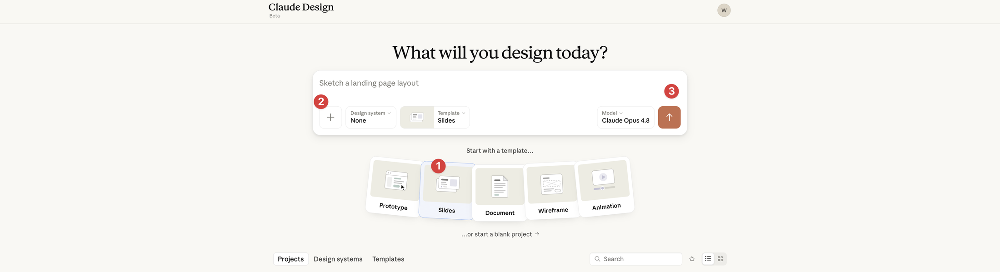
生 deck
10:00
17
第二幕 · 生 deck · 10 MIN
Claude Design它生出來長這樣
同一份研究 —— 它生出 11 頁提案簡報。
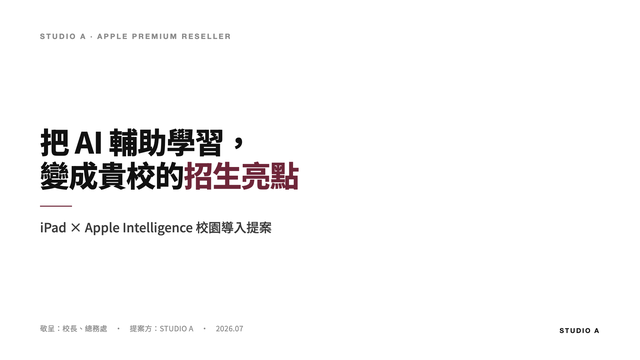
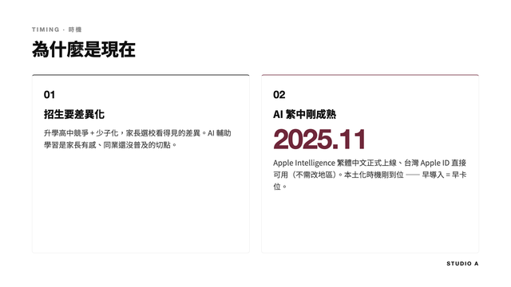
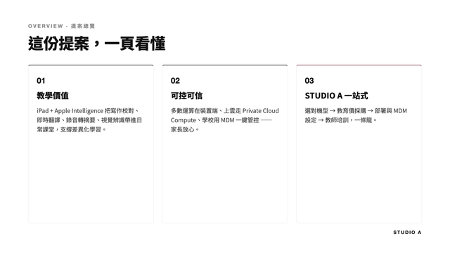
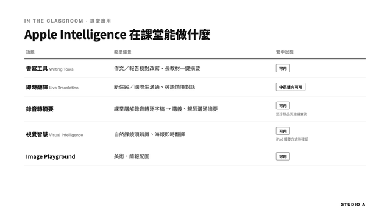
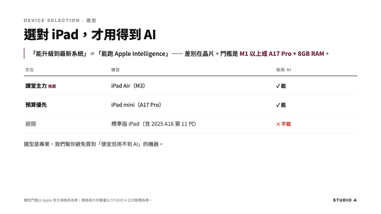
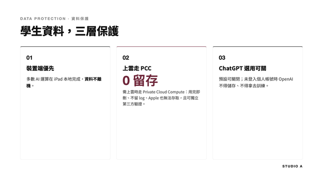
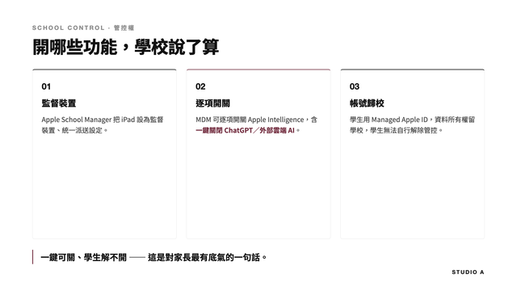
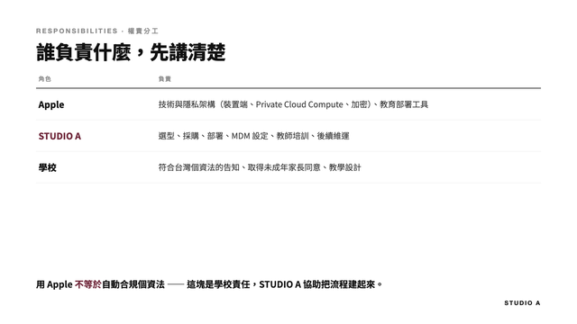
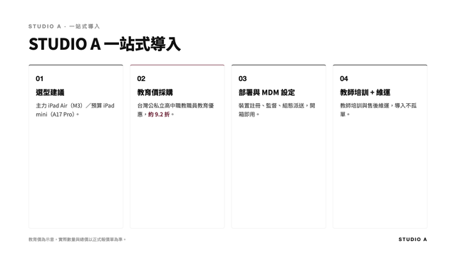
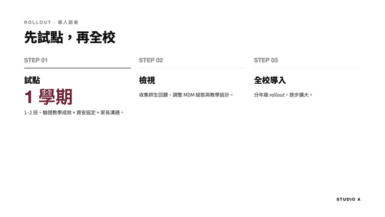
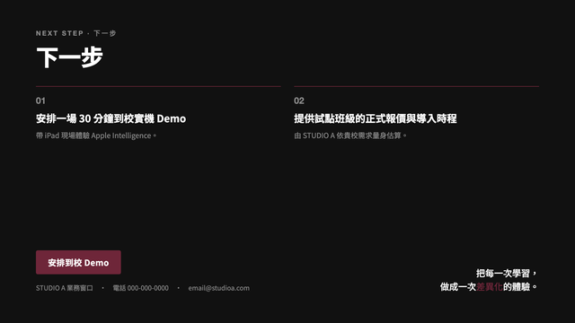
你寫的 prompt.md 餵進去 —— 11 頁、字級、配色、圖表全照你 prompt 寫的長出來。（品牌外觀下一段升級）
18
第二幕 · 生出的 deck
第二幕 · design system好看 → 你的樣子
deck 生出來了 ——
但它還不是「你們公司的樣子」。
但它還不是「你們公司的樣子」。
好看不夠 —— 要一眼看得出是 STUDIO A 出的提案。下一步：套上你的品牌 —— Claude Design 這邊要先匯進來。
19
design system好看 ≠ 你的品牌
好看還不夠 —— 要像「STUDIO A」的樣子。
design system ＝ 把「你們公司長什麼樣」存成一套規格。Claude Design 讀它 → 整份自動 on-brand。建一次、全員用。
SA
logo
商標、放哪、留邊
配色
白 · 近黑 · 一點 A 藍
AaAa
字型
Noto Sans · 無 serif
間距 · 版型
大留白 · 一頁一重點
150
元件樣式
封面 / 大數字 / 卡片
⚠ Claude Design 看不到你電腦的 skill —— 把這套 design system 上傳檔案給它（D1 就給過你了，不用重建）。
20
第二幕 · design system 是什麼
匯入 · 生成 · 發布下載 → 匯進 → 勾 Published
把 STUDIO A design system 匯進 Claude Design —— 匯入 → 生成 → 發布。
1
Design systems → Create design system

2
選 Create here

3
檔案拖進 Add fonts, logos and assets → Continue

4
按 Continue 後它生成 5-8 分 —— 完成後勾 Published，全公司的新專案才用得到。

生成中 · 等它跑
08:00
發布好就出現在 picker —— 下一頁套上你的 deck。
21
第二幕 · 匯入 · 生成 · 發布
動手套上 deck · 換皮 · 5 MIN
套上你的 deck —— 換皮、不重做。
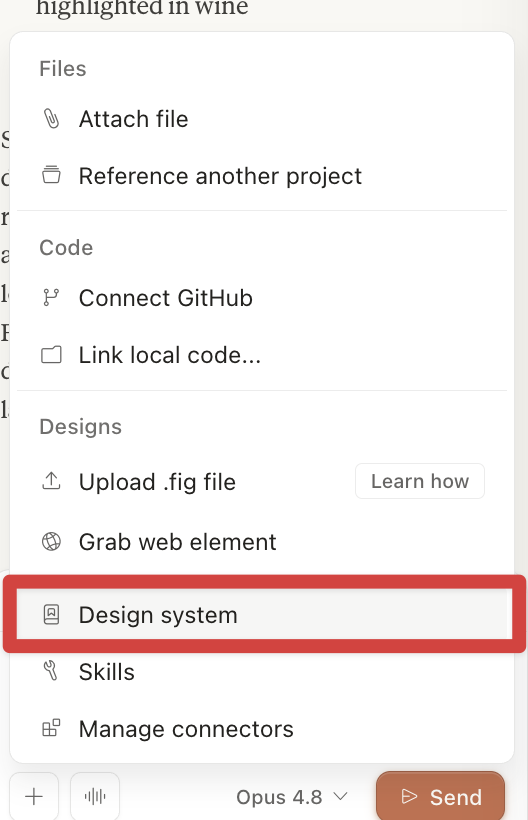
deck 專案 → ＋ → Design system
1
回你的 deck 專案 → 點 ＋ → Design system → 選 STUDIO A
2
貼這句、送出：
> 用新的 design system 重新調整投影片
3
同一份 deck → 整份變 STUDIO A 品牌（沒重做、只換皮）
換你做：選 STUDIO A → 叫它重新調整投影片 → 看 deck 變 STUDIO A 品牌。
05:00
22
第二幕 · 套上 deck · 5 MIN
Claude Design換 DS · 整份變
同一份提案 —— 換上 STUDIO A 的品牌。
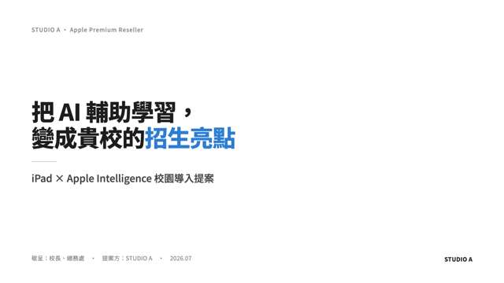
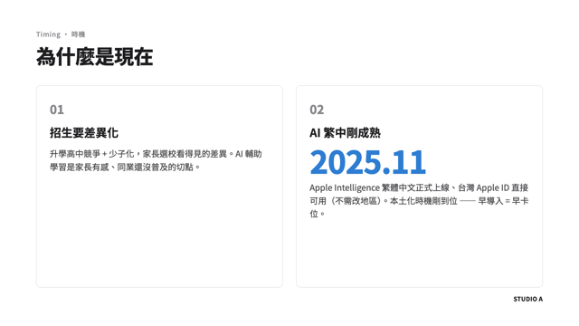
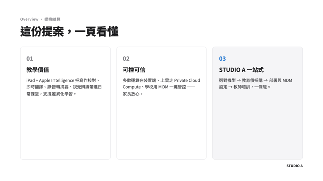
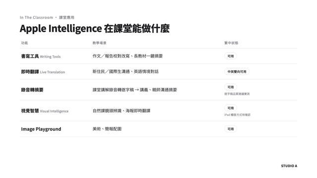
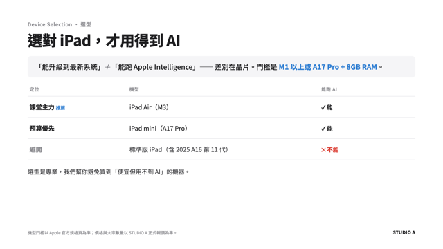
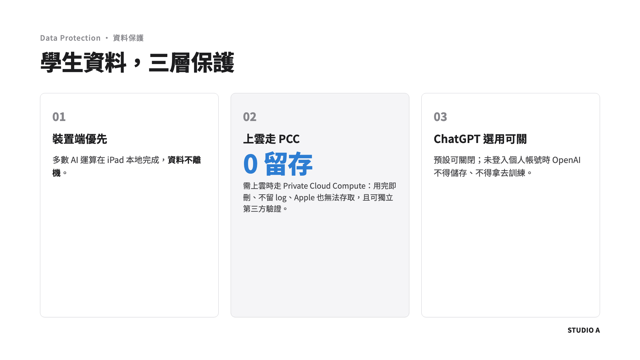
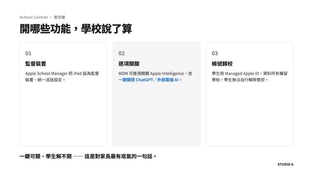
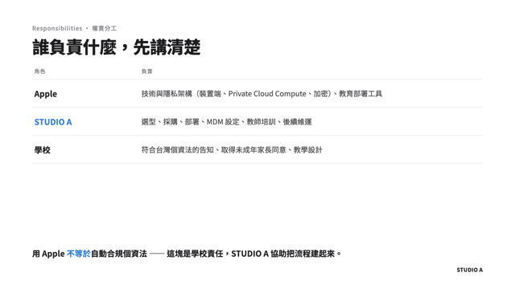
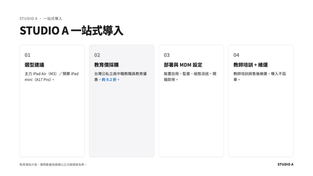
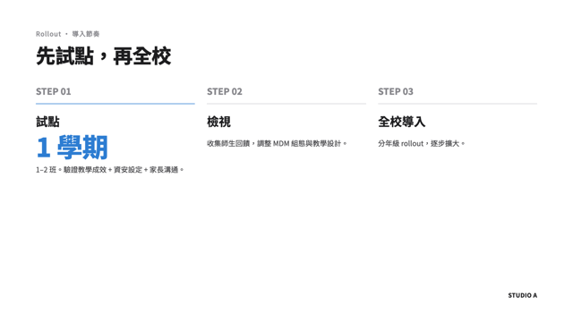
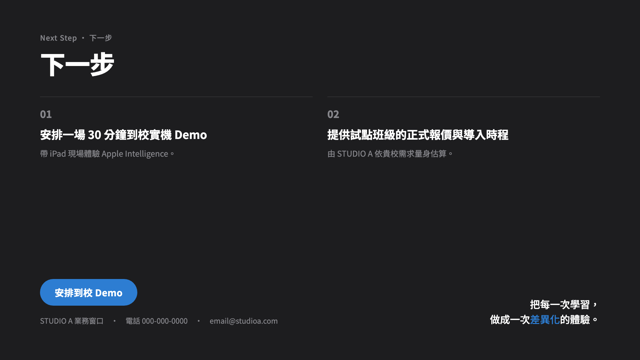
沒重做、只換 design system —— 11 頁整份換成 STUDIO A 品牌（白底 · 近黑 · 一點 A 藍 · 柔圓卡角），內容一字沒改。
23
第二幕 · 生出的 deck · STUDIO A 版
第二幕 · Claude Design生好了 → 想再改？
deck 好看、也 on-brand 了 ——
想再親手改一下呢？
想再親手改一下呢？
Claude Design 負責「生」；想精修 —— 換張圖、改一句、調個版 —— 就把整份 deck 抓回 Claude Code，當可編輯的檔案改。
24
第二幕 · 想再改 deck
想再改抓回 Claude Code 動手改
想再細調 —— 抓回 Claude Code 改。
Claude Design 負責「生」；想精修就抓回 Claude Code —— 整份 deck 變可編輯檔案，像改檔案一樣叫 Claude 微調。
1
右上 Share → 捲到 More formats and apps

2
Your destinations 找 Claude Code → 按 Send

3
Send to local coding agent → 指令貼進 Claude Code、enter
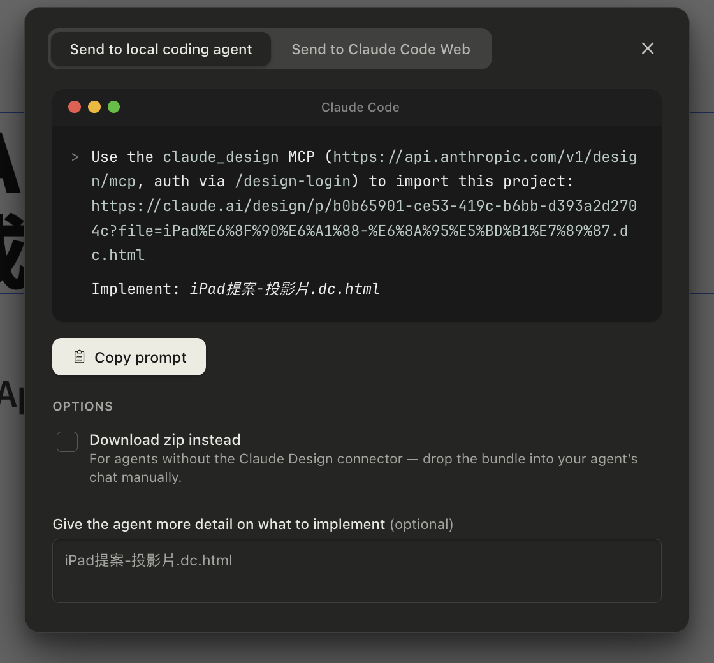
Claude Code 第一次會要你跑一次 /design-consent（把 Claude Design 掛到你的登入）→ 之後就直接抓，不用再授權。
25
第二幕 · Send to Claude Code
現場示範 · AirPlay抓回來，一起改一頁
找 1 位 —— AirPlay 出來，一起改一頁。
抽一位 · AirPlay
？
抓回 Code —— deck 就是可編輯的 HTML
挑一個改法，現場叫 Claude 改給大家看 ——
🖼️ 加圖到封面
「抓一張 iPad 的圖，放到首頁當封面」
📝 改一頁文字
「第 3 頁講白話一點、少兩行字」
🎨 調視覺
「這頁圖太大縮小」「配色再沉穩點」
26
第二幕 · AirPlay 一起改
reflect何時用哪個
兩種工作流 —— 何時用哪個。
要「內容 / 資料」→ Claude Code
研究、報表、知識庫、skill —— 產出是檔案 / 資料，走 Claude Code（就是你 D1+今天在用的）。
要「給人看的簡報」→ Claude Design
提案、對外簡報 —— 產出是一頁頁的設計，走 Claude Design → 套 design system → 抓回 Code 細調。
同一份研究 —— 進 Code 變知識庫、進 Design 變提案簡報。
27
第二幕 · 兩種工作流
換你的題目 · 上半場總複習研究 → deck · 30 MIN
換你的題目 —— 從研究一路做到一份 deck。
銷售桌
你要提的方案 / 客戶學校 → 研究 → 提案 deck
MDM 桌
你要導入的 ASM / MDM 方案 → 研究 → 說明 deck
1 [研究] 題目
→
2 prompt 設計稿
→
3 選 STUDIO A DS → Claude Design 生 deck
題目給誰看都行：對外提案、對內提案、教育訓練都算。產出一份 deck 雛形、不用完美 —— 跑通「研究 → 簡報」就贏了，卡住舉手。
研究 → deck
30:00
28
上半場 · CAPSTONE 研究 → deck · 30 MIN
上半場完 · 休息研究 → 提案簡報 ✓
☕ 下課 —— 10 分鐘。
上半場你把一個提案 研究清楚、變成給學校的簡報。
下半場：先把過程沉澱成你的知識資產，再固化成你自己的 skill。
下半場：先把過程沉澱成你的知識資產，再固化成你自己的 skill。
回來 · 知識沉澱 → Skill 化
29
知識沉澱 · 為什麼簡報交了，那過程呢
研究好了、簡報也交了 —— 那一路學到的，留下來了嗎？
✓ 查了 20+ 來源
✓ 判斷、比較、踩過坑
✓ 簡報交出去
簡報是一次性的交付 —— 交出去，這案子就躺在資料夾了。
但你「怎麼查、怎麼判斷、踩過哪些坑」的知識，才是下次還能一直用的資產。
但你「怎麼查、怎麼判斷、踩過哪些坑」的知識，才是下次還能一直用的資產。
下次遇到類似的題目 —— 又從頭查一遍？還是一句話把上次的調出來就用？
把過程的知識留下來、以後能覆用 —— 這，就是知識管理。
30
知識沉澱 · 為什麼要留
以前有多難拆卡是一門專業
存檔誰都會 —— 但拆成知識卡，以前是一門專業。
自己一張張整理 —— 要做的事
① 讀懂整份、挑出真正該留的重點
② 每個重點拆成一張獨立的卡
③ 判斷每張多重要
④ 分類、再找出卡跟卡的關聯
⑤ 還得長期持續，新知識接上舊的
一份報告認真整理 ＝ 半天 · 還得先學方法、靠紀律

這套方法有多強、又多難
德國學者盧曼 —— 一輩子九萬張卡、寫出 70 多本書。
強到有專書教《卡片盒筆記》—— 但學會它得花功夫。
所以大多數人的知識 —— 存了一堆，全是打不開的死檔案。
31
知識沉澱 · 以前有多難
現在一句話 30 秒
現在 —— 一句 [歸檔]，30 秒做完。
AI 自動做完 —— 剛剛那 5 件
挑出重點 · 拆成一張張獨立卡
評每張重要性 · 分類 · 連好關聯
評每張重要性 · 分類 · 連好關聯
你只說一句 [歸檔] —— 其它它全包。
以前
半天
↓
現在
30 秒
以前是盧曼的本事 —— 現在是你的一句話。
32
知識沉澱 · [歸檔] 一句話翻轉
拆成卡之後一卡多用 · 連成網
拆成卡之後 —— 一張到處用，還會連成網。
一卡多用 · 重複調
你剛存的「只有 M1+ iPad 才跑得動 AI」卡 ——
· 提案會議 → 講「為什麼要新機」
· 報價給學校 → 附裝置門檻說明
· 明年汰換 → 回來對帳「哪些該換」
· 報價給學校 → 附裝置門檻說明
· 明年汰換 → 回來對帳「哪些該換」
不用每次翻整份報告 —— 一張卡直接調。
卡連卡 · 長成判斷網
它自動連到你另外幾張卡 —— 「書寫工具功能」「資安 Private Cloud」「他校導入案例」。
越存越多 → 一張會長大的提案判斷網。
這套叫卡片盒筆記法 —— 你存的不是檔案，是一張會長大的判斷網。
33
知識沉澱 · 拆成卡強在哪
它就在你 vault 裡自動好
而這一切 —— 就在你 vault 裡，自動好。
EXPLORER · 你的 vault
▸ Inbox 暫時
▸ Cockpit 每天
▸ efforts
▾ Atlas ← 永久知識庫
▸ Dots 知識卡
▸ Sources 來源
▸ Maps 索引
跟 Inbox、Cockpit 並排的一個資料夾 —— 已經幫你開好、分好格。
剛剛那些拆卡、評重要性、分類、連結 —— AI 自動放進對的格子，你不用當圖書管理員。
不用裝、不用搬、不用自己分 —— 你只要說一句 [歸檔]。
34
知識沉澱 · Atlas 在 vault
動手 ②[歸檔] 進 Atlas · 3 MIN
動手② —— 打一句 [歸檔]。
[研究] 把功課做完了 —— 再給一個暗號 [歸檔]，把報告拆成一張張會連的卡。
接著貼這段
複製 · 貼進 Claude Code · ENTER
> [歸檔] 把剛剛那份 Apple Intelligence 校園導入研究的重點，
整理進我的 Atlas —— 一張卡一個重點、標好出處。
讓它拆卡
03:00
35
知識沉澱 · 動手 · [歸檔]
產出 ②一句話 → 9 張卡
一句 [歸檔] —— 拆出 9 張永久卡。
9 張卡 · 自動掛在 [[iPad 教育導入 MOC]]
Statement
繁中始於 iPadOS 26.1 · 非 iOS 18.4
Statement
標準版 iPad 全線不支援 AI
Statement
能升 iPadOS 26 ≠ 能跑 AI
Statement
ChatGPT 留存 · 看有沒有登入個人帳號
Statement
家長同意是學校責任 · 非自動合規
Thing
晶片門檻 · M1／A17 Pro＋8GB RAM
Thing
Private Cloud Compute · 用完即刪
Thing
MDM 一鍵關閉 ChatGPT
Thing
課堂功能繁中可用性一覽
9 張卡 ＋ 自動長出一個 MOC —— 你的提案知識庫，第一批。
36
知識沉澱 · [歸檔] → 9 張卡
產出 ②打開一張看裡面
打開其中一張 —— 裡面長這樣。
Statements
標準版 iPad 全線不支援 Apple Intelligence
---
up: [[iPad 教育導入 MOC]]
collection: Statements
related: [[晶片門檻…]] +1
source: [[2026-07-09 提案研究]]
created: 2026-07-09
---
says · 晶片與 RAM 未達門檻，標準版 iPad 全線（含 2025 最新 A16）跑不了 Apple Intelligence。
世代
晶片
AI
iPad 第 9 代
A13
❌
iPad 第 10 代
A14
❌
第 11 代 (2025)
A16
❌
## 核心啟示 為省錢整批買標準版 → AI 賣點全落空。提案核心是 AI，就不能選標準版。
一張卡 = 一個結論 ＋ 證據 ＋ 可複用啟示 —— 半年後打開還看得懂。
37
知識沉澱 · 打開一張卡
真的長這樣 · Obsidian剛剛那份研究，歸檔後
這就是剛剛那份研究 —— 歸檔進 vault，真的長這樣。
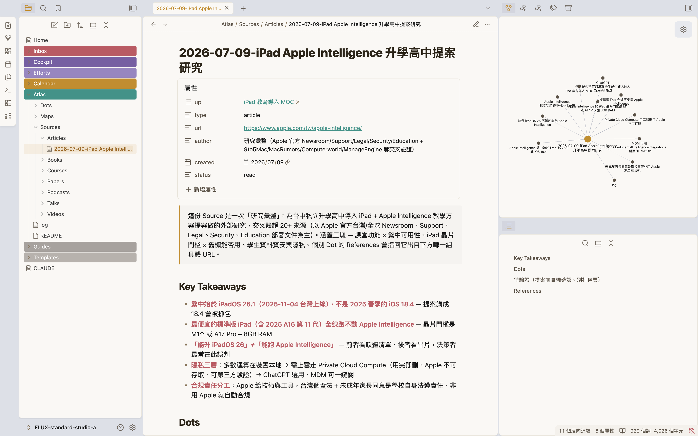
右邊那張 graph —— 拆出的知識卡全連起來了。而這，才第一份研究 —— 越存越多，會怎樣？
38
知識沉澱 · 真的長這樣
飛輪越用越聰明
你存的第一批卡 —— 下次提案，直接調。
銷售這半 · 客戶/產品庫
今天存的 Apple Intelligence 卡，是教育事業部產品知識庫的第一批。
下次換學校、換方案 —— Claude 先翻你存過的 → 提案越做越快。
MDM 這半 · 技術庫
同一套 [研究]+[歸檔] —— 把 MDM 技術、排障 [歸檔] 成你自己的技術庫。
下次遇到同問題，Claude 先翻你存過的、不用重查。
你不是查完就忘 —— 你在養一個越用越聰明的知識庫。
39
知識沉澱 · 飛輪
第三幕 · Skill 化你一直在用一個東西
你剛用的 [研究]、[歸檔]、
還有 D1 裝的品牌設計 —— 它們到底是什麼？
還有 D1 裝的品牌設計 —— 它們到底是什麼？
都叫 Skill —— 別人寫好、你一句話就能用。
今天最後一段：換你親手包一個，把每週重複的工作變成你自己的 skill。
今天最後一段：換你親手包一個，把每週重複的工作變成你自己的 skill。
第三幕 · Skill 心智模型
40
第三幕 · 揭曉誰在背後做事
你以為是 Claude 自己做 —— 其實是一個 skill。
你以為
Claude 自己上網查、自己把文章拆成卡片。
其實不是。
背後 · 一個 skill ＝ knowledge-keeper
你打 [研究]／[歸檔] —— 是 knowledge-keeper 這個 skill 接手，照你教它的步驟做完。
你不用記 skill 名字 —— 說「[研究]…」它自己就跳出來上工。
今天你叫的 [研究]、[歸檔] —— 都是 knowledge-keeper 這一個 skill 在背後跑。
41
第三幕 · 不是 Claude，是 skill
第三幕 · skill 是什麼教一次、多一個員工
Skill ＝ 把一整套做法，「教」給 Claude 一次。
Claude 本身
通用助手 —— 什麼都會一點，但不知道你們公司怎麼做事。
像剛到職的工讀生 —— 能力不差，但規矩要一條條教、每次重講。
裝上 skill
把「你的流程、標準、偏好」教進去 —— 它就照你的方式做。
像待了三年的老手 —— 你說一句，他知道整套怎麼跑。
幫 Claude 裝一個 skill ＝ 多一個資深員工。 knowledge-keeper ＝ 你的研究員、studioa-design ＝ 你的品牌設計師。
42
第三幕 · 教給 Claude
第三幕 · skill 結構就是一個資料夾
一個 skill —— 就是一個 資料夾。
你的 vault/
└─ .claude/skills/
└─ 你的 skill/
├─ SKILL.md ← 主要指令（必要）
├─ scripts/ ← 可執行的腳本（選用）
├─ references/ ← 參考文件（選用）
└─ assets/ ← 模板（選用）
每個 skill 都是這長相 —— SKILL.md 必要，其他三個要用才加。你剛用的 knowledge-keeper 就是一個。
最少 —— 一個檔就是 skill
只有 SKILL.md 必要，其他都是要用才加的選配。很多 skill 就這一個檔。
就是一個資料夾
整包複製／壓縮就能分享 —— 丟進 .claude/skills/ 就生效。
想更深入？完整指南 —— 每個資料夾的用途＋實例，都寫在這篇。
yu-wenhao.com/zh-TW/blog/claude-skills-guide ↗
43
第三幕 · skill 長什麼樣
第三幕 · SKILL.md封面 + 你的 SOP
打開 SKILL.md —— 上面封面、下面 SOP。
---
name: knowledge-keeper
description: 知識庫助手。兩個暗號：
[研究] 收集網路資料、
[歸檔] 拆成知識卡片。
當使用者說「[研究] XXX」…時使用。
---
# 知識庫助手
## 工作流程 — [研究]
1. 先查你存過的 2. 再補外部
3. 讀多來源、整合 4. 進 Inbox
封面（--- 之間的 YAML）
name ＋ 觸發語 —— Claude 靠這段判斷要不要啟動（就是 [研究]／[歸檔] 兩個暗號）。
本體（下面的 Markdown）
就是你的 SOP —— 規則 ＋ 一步步流程。
上面 YAML 封面、下面 Markdown SOP —— 你看得懂，就寫得出。
44
第三幕 · 打開 SKILL.md
第三幕 · 為什麼值得一次寫好、天天省
為什麼值得做成 skill？
穩品質 ＋ 省力
同一件事 —— 今天這樣講、明天那樣講，做法就跑掉：多一步、漏一步、格式亂。每次還得重講背景。
寫成 skill ＝ 標準化 SOP：品質穩、一句話觸發 —— 一次寫好、天天省。
省 Context ＋ 顧注意力
省 context：skill 平常不佔位、用到才載入 —— 不塞爆 Claude 的工作記憶。
顧注意力：塞越多、它越抓不住重點；省下來 —— 注意力留給當下這件事。
一次寫好 —— 穩品質、省力、省 context、又顧注意力。 正式名 Agent Skills · 開放標準。
45
第三幕 · 為什麼值得
第三幕 · 動手看 context打 /context
動手 —— 開個新的，打 /context。
先開一個新的 Claude Code、再打 /context —— 才看得到「乾淨的起點」：還沒聊天時，系統 ＋ CLAUDE.md ＋ skill 各佔多少。
Context usage
範例畫面 · 你的數字會不同
40.3k / 200.0k tokens（20%）
CATEGORYTOKENSUSAGE
System prompt 系統提示7.0k3.5%
System tools 內建工具12.4k6.2%
Custom agents 你的 agent2.2k1.1%
Memory files 你的 CLAUDE.md15.4k7.7%
Skills ← skill 封面，只佔一點點3.1k1.5%
Messages 對話 · 開新的＝幾乎 00.1k<0.1%
Autocompact buffer 留給自動壓縮33.0k16.5%
Free space 真正能對話的126.7k63.4%
✍️ 記下你自己的 Free space ＝
k
Skills 只佔 3.1k —— 這就是「裝很多也不卡」的證據。
46
第三幕 · 動手 /context
第三幕 · 為什麼不卡漸進式揭露
裝很多 skill 也不卡 —— 三層載入。
剛剛你看到 skills 只佔一點點 —— 為什麼？skill 越裝越多，全部載進來會吃光 Claude 的工作記憶。所以開機只載「名字」，要用才一層層翻開：
①開機 —— 只讀每個 skill 的名字 ＋ 一句描述很輕，幾乎不佔位
②你說 「[研究]…」 → 命中 knowledge-keeper → 載入完整指令要用才翻開
③真需要才讀它的 references ／ assets附加、平常不載
這叫漸進式揭露 —— 開機只看封面、要用才翻內層。所以你裝再多 skill 都不會塞爆。
47
第三幕 · 三層載入
第三幕 · 判斷三分法
什麼該包成 skill？—— 先分三格。
重複又固定 → 包成 skill
每週都跑、步驟固定的活 —— 進銷存週報、RMA 日報、報價。
← 今天下半場做這個
每次都要看 → 做成工具
要一直盯的數字、進度 —— 做成儀表板／工具。
← D3 這週五
要下判斷 → 留給你
策略、取捨、要不要成交 —— AI 不接，這是你的價值。
← 永遠你來
先分格、再動手 —— 只有「重複又固定」那格值得包成 skill。 下半場就從你工作裡那一條開始。
48
第三幕 · 什麼該包成 skill
第三幕 · 盤點 → 換你建你手上已經有 4 個
你手上 —— 已經有 skill 了。
.CLAUDE/SKILLS/ · 裝好的 ✓
▸ knowledge-keeper[研究] ／ [歸檔]
▸ studioa-designClaude Design 品牌
▸ email收發信
▸ calendar看行事曆
4 個資深員工 —— 但都是別人寫好的。
還住在 CLAUDE.md · 還不是獨立 skill
§ 開工D1 跑過
§ 收工D1 跑過
§ 結算本週D1 跑過
寫成流程、住在 CLAUDE.md —— 還沒抽成 skill。
開工／收工／結算 —— 這些你天天跑的流程，其實差一步就是 skill。今天，換你把它們抽出來、變成真 skill。
49
第三幕 · 你已經有 skill → 換你建
第三幕 · 解構開工 對照 真 skill
「開工」對照真 skill —— 同一個形狀。
還記得剛剛 knowledge-keeper 的 SKILL.md 嗎？把你天天喊的「開工」擺旁邊看 —— 一模一樣。
✅ 已經是 skill住在 .claude/skills/
knowledge-keeper/SKILL.md
---
name: knowledge-keeper
觸發語：[研究] ／ [歸檔]
---
## 工作流程 — [研究]
1. 先查你存過的 2. 補外部
3. 整合成報告 4. 進 Inbox
⚠️ 還不是 skill還住在 CLAUDE.md
CLAUDE.md —— ## 開工 這段
## 開工
觸發語：「開工」「規劃今天」「早安」
### 流程
1. 確認日期 ＋ 檢查 git
2. 回顧最近 daily、盤點待辦
3. 掃 Efforts ／ Inbox 可做的事
4. 討論後建立 Daily Note
兩邊都是 觸發語 ＋ 步驟 —— 同一個形狀，差別只在住哪。 把開工搬進 skills/ —— 就是真 skill。
50
第三幕 · 解構開工 → 接動手
第三幕 · 抽 routine 成 skill同一招、抽 3 個
開工、收工、結算 —— 都還在 CLAUDE.md。
今天，全抽成 skill。
今天，全抽成 skill。
同一招 —— 抽 3 個。一段 prompt 照貼，Claude 幫你搬。
第三幕 · 升級 routines
51
第三幕 · 升級 routines升級開工
升級開工 —— 變 skill、還加料。
D1 開工 · 你跑過
只盤點任務
→
升級開工
+ 過去 24h 的信，挑出要回的
+ 今天＋明天行程
+ 盤點任務
+ 今天＋明天行程
+ 盤點任務
同一招抽成 skill —— 一段 prompt 講清楚 4 件事，它才做得穩
① 讀哪段
指明 ## 開工
讓它讀原文、別亂猜
讓它讀原文、別亂猜
② 存哪
.claude/skills/
只建一個 SKILL.md
只建一個 SKILL.md
③ 觸發語
寫進 description
Claude 才知道何時用
Claude 才知道何時用
④ 照原樣
body 照步驟寫
不要自己加減
不要自己加減
開工／收工／結算 你 D1 都跑過 —— 同一招、三個都抽成 skill，下面三頁一段 prompt 照貼。
52
第三幕 · 升級開工 + 4 要素
動手 ①把開工變 daily skill · 5 MIN
動手① —— 把 開工 變 skill、加料。
複製 · 貼進 Claude Code · ENTER
> 讀我 CLAUDE.md 裡「## 開工」那一整段，做成一個叫「daily」的 skill，建在這個 vault 裡：
· 說「開工／規劃今天／早安」任一句就自動啟動
· 步驟照「## 開工」原本的做，別漏也別改
· 盤點任務前多加兩步：
① email（skill）抓過去 24h 信、挑要回的
② calendar（skill）看今天＋明天行程
· 建好後「## 開工」那段換成一句「已做成 daily skill」，其它別動
💡email、calendar 本來就是 skill（你手上那 4 個裡的兩個）—— 你在讓 daily 這個 skill 去叫另外兩個 skill：skill 會互相組合。
daily
05:00
跑完 · 打開這兩處確認
① .claude/skills/ 裡多了 daily/ 資料夾
② CLAUDE.md 的「## 開工」→ 只剩一句話
53
第三幕 · 動手① daily · 5 MIN
動手 ②把收工變 eod skill · 5 MIN
動手② —— 把 收工 變 skill。
複製 · 貼進 Claude Code · ENTER
> 讀我 CLAUDE.md 裡「## 收工」那一整段，做成一個叫「eod」的 skill，建在這個 vault 裡：
· 說「收工／回顧今天／下班了」任一句就自動啟動
· 步驟照「## 收工」原本的做，別漏也別改
· 建好後「## 收工」那段換成一句「已做成 eod skill」，其它別動
收工是開工的鏡像、更快 —— 同一個模板換一段。
eod
05:00
跑完 · 打開這兩處確認
① .claude/skills/ 裡多了 eod/ 資料夾
② CLAUDE.md 的「## 收工」→ 只剩一句話
54
第三幕 · 動手② eod · 5 MIN
動手 ③把結算本週變 wam skill · 5 MIN
動手③ —— 把 結算本週 變 skill。
複製 · 貼進 Claude Code · ENTER
> 讀我 CLAUDE.md 裡「## WAM」那一整段，做成一個叫「wam」的 skill，建在這個 vault 裡：
· 說「結算本週／週會／週末收尾／lock 下週」任一句就自動啟動
· 步驟照「## WAM」原本的 6 個步驟 做，別漏也別改
· 建好後「## WAM」那段換成一句「已做成 wam skill」，其它別動
結算步驟最多（6 步）—— 讓它先讀一遍再做、別漏。
wam
05:00
跑完 · 打開這兩處確認
① .claude/skills/ 裡多了 wam/ 資料夾
② CLAUDE.md 的「## WAM」→ 只剩一句話
55
第三幕 · 動手③ wam · 5 MIN
第三幕 · 收尾開新的 · 驗三個 · 6 MIN
開個新的 —— 讓三個 skill 真的接手。
你剛把「開工／收工／結算」三段都換成一句話了 —— 每件事現在只剩 一個來源：skill。
先做這件事
開一個新的 Claude Code
（舊的不用關）
（舊的不用關）
06:00
在新的那個 · 各說一次 → 看它自己跑
說「開工」→ 有抓信、看今明行程、排今天
說「收工」→ 有照流程跑
說「結算本週」→ 它有跳出來、開始問本週？（認得、跳出來就成了 —— 真的結算平常週五做）
三個都喊得動 ＝ 接上了 ✓
為什麼要開新的：CLAUDE.md 是 Claude 一開機就讀進去記著的。你中途改了，這次開著的還記得舊版 —— 開個新的，它才讀到新版、skill 才真正接手。
56
第三幕 · 開新的 · 驗三個 · 6 MIN
第三幕 · 收尾你的 skill 團隊
現在 —— 你有 7 個 skill。
手上原有 · 4
knowledge-keeper[研究]／[歸檔]
studioa-design品牌設計
email收發信
calendar看行事曆
＋
今天你親手做的 · +3
daily開工 + 信 + 行程
eod收工
wam結算本週
從別人寫的 —— 到自己寫的。
7 個 skill —— 有的喊一聲幫你 跑（開工／收工／回信／排程），有的在旁邊幫你 把關（知識、品牌）。
57
第三幕 · 你的 skill 團隊
第三幕 · 收尾做 skill · 你會到哪一階
做一個 skill —— 你已經會 兩種做法了。
手上這 7 個 skill、兩種來歷 —— 但最關鍵的第三種，你還沒試過 ——
① 拿現成的用 · 會了 ✓
別人寫好的，直接用
D1 裝的那幾個 —— 不用懂怎麼做，喊一聲就跑。
D1 裝的 4 個 · 別人寫好
② 把手邊的抽出來 · 剛做 ✓
現成的流程，抽成 skill
你 CLAUDE.md 裡本來就有的「開工／收工」—— 搬進 skills/。
daily · eod · wam
③ 從一張白紙做一個 · 接下來
沒人寫過的，從零長出來
不抄現成、不靠別人 —— 一個全新的、你部門專屬的 skill。
接下來 ▶ 自造 進銷存報表
前兩種你都會了 —— 最後一種：從一張白紙，自己長一個出來。
58
第三幕 · skill 三階 → 自造
第三階 · 從白紙自造進銷存報表
從一張白紙 —— 自己長一個 skill 出來。
挑你每週最花時間、又沒人幫你寫好的那件 —— 各區進銷存週報。手拉數字 3–4 小時，換 skill 幫你算、幫你對。
第三階 · 自造你的第一個 skill
59
報表那群 · 每週在跑最卡在手填數字
進銷存這條龍 —— 卡在 手填那步。
Angel 每週一次、一次 3–4 小時，把各區（TW-SA／TW-ST／HK）進銷存手拉成一份會議簡報。一條龍走下來 ——
①
收各區
庫存/銷售原始檔
庫存/銷售原始檔
Excel · Email
→
②
上傳雲端
備份建檔
備份建檔
Google Drive
→
③ 🔴 最卡
手填數字進
Google Sheet
Google Sheet
數字多且雜 · 逐欄核對
→
④
套簡報格式
貼上
貼上
Keynote → ARpedia
紅貼就一張、貼在同一步：手填數字、逐欄對。今天，就把 ②③ 交出去、④ 換成 D1 的 HTML 報表。
60
第三幕 · 進銷存這條龍 · 卡在手填
第三幕 · 數據報表 skill正向講不清，就以終為始
規則講不清 —— 就給輸出、讓它反推。
① 想要的 每週一句話，把 56 門市 ＋ 專案的進銷存，自動彙成一張表 ＋ 一段觀察。
② 輸入 · 各區原始檔（你有）
📷 Excel 截圖
img/inv-input.png
img/inv-input.png
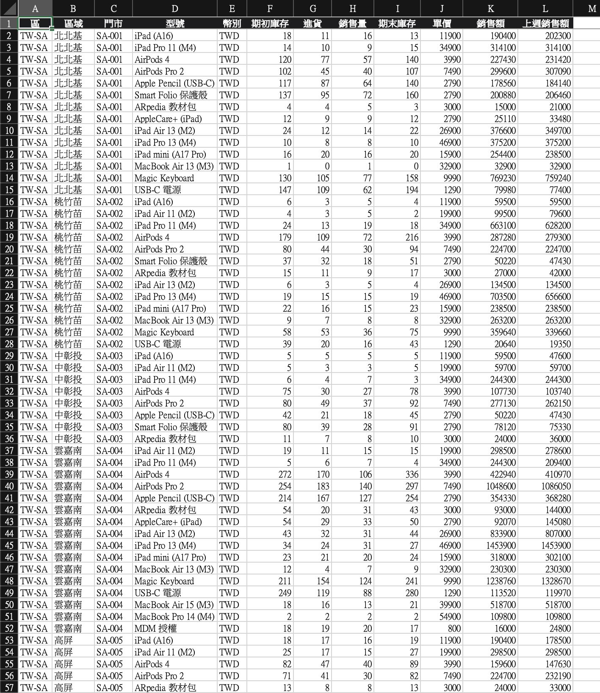
門市級明細 · 多幣別 TWD/HKD · 沒有主分類 · HK 含業務
→
④ 輸出 · 你手做的目標樞紐（你也有）
📷 Excel pivot 截圖
img/inv-pivot.png
img/inv-pivot.png
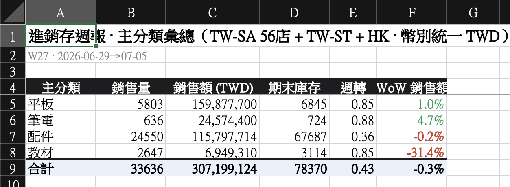
主分類彙總 · 週轉 · WoW · 異常標紅
③ Claude 要做的（= 講不清的那段）· 分類照「主分類對照」、通路看欄位
1 加主分類（照對照表）＋通路（欄位） 2 幣別統一 TWD（換算率問你） 3 算週轉、WoW、標紅 缺的規則 → 問你、不硬掰
②④ 你都給得出 —— 只有 ③「怎麼算」講不全。以終為始：給它 ②④、讓它反推 ③，你只補猜不到的規則。
61
第三幕 · 以終為始
第三幕 · 數據報表 skill先做對、再做好看
做 skill 分兩段 —— 先做對、再收成。
① 先把內容做對 · 接下來先做這個
理解→對帳→觀察
把數字算對、逐欄跟你的樞紐對到 0 差；規則猜不到就問你。最後補一段觀察（像「教材 −31% 掉最兇」）。
→
② 再收成 skill · 內容對了再談
排版→固化
套 D1 的 HTML 範本排成漂亮報表；寫成 SKILL.md ＋ 觸發語。下次丟三份新檔、一句話重跑。
一段一段來 —— 先把內容做對（理解·對帳·觀察），再排好、收成 skill（排版·固化）。
62
第三幕 · 兩階段
第三幕 · 數據報表 skill照貼這段（先別算）
第一步 —— 先讓它看懂怎麼算。
1理解2對帳3觀察4排版5固化
跟著做 —— 下載練習資料 → 貼 ① 讓 Claude 搬進 inbox 解壓 → 貼 ② 開始看懂。
⬇ 下載練習資料各區 xlsx · 主分類對照 · 目標樞紐
① 先搬進 inbox 解壓
> 把我剛下載的 inv-sample-data.zip（在 Downloads）搬進這個 vault 的 inbox、
解壓成資料夾 inbox/進銷存-練習/，把裡面的檔案列給我看。
② 理解 · 先別算
> 讀 inbox/進銷存-練習/ 裡的資料（三份原始檔＋主分類對照＋我手做的目標樞紐）—— 先讀進來。
先看懂怎麼長成那張樞紐：分類怎麼歸、通路怎麼分、幣別怎麼統一、週轉/WoW 怎麼算。
把步驟講給我聽、資料裡沒有、要我補的（換算率、退貨算法）都問我。先別算、先別建 skill。
這一步在做什麼
· 給它【三份檔 ＋ 目標樞紐】
· 讓它反推你怎麼算出來的
· 只講步驟、先別算
· 讓它反推你怎麼算出來的
· 只講步驟、先別算
63
第三幕 · 理解
第三幕 · 數據報表 skill它自己推、推不到問你
它反推你的算法 —— 算得出的自己跑、缺的問你。
1理解2對帳3觀察4排版5固化
✓ 它自己搞定 · 對帳到 0 差
數字（銷量／額／期末／週轉／WoW）逐欄算＋對帳 · 分類照對照表 · 通路看欄位 · 公式看樞紐推
❓ 缺的規則 · 它會回問你、不硬掰
你想得到HKD 換算率？ 銷售扣不扣退貨？
它想到 →週轉分母期末還期初？ 上週額套哪週匯率？
照貼 · 交代規則 → 算 + 對到 0 差
> 算之前先跟你說幾條規則：匯率 4.0、算淨額、週轉用期末、上週也套 4.0。
用三份檔實際算一次、跟樞紐對帳：四類的銷量/額/期末 對得上嗎？
對不上講差在哪，別硬湊。
☝ 數字是練習資料的預設；換你自己的資料時填你們的規則
對帳對到 0 差是基本功 —— 它主動問出你沒定義清楚的規則（週轉分母、匯率一致性），才是以終為始真正發生的一刻。
64
第三幕 · 對帳
第三幕 · 數據報表 skill樞紐寫不出來的那一段
數字對了 —— 再加一段樞紐寫不出的觀察。
1理解2對帳3觀察4排版5固化
照貼 · 挑幾點觀察 · 先講給我聽
> 數字都對上了。挑 3-5 個值得注意的點講給我聽，異常標紅。
用主管看得懂的話、不要空泛；先別寫進檔案，等下連數字一起排進報表。
它自己挑出來、幫你標紅
教材 −31.4% 掉最兇 —— 檔期收尾、非崩
配件庫存堆到 67,687（占 86%）、週轉最低 —— 壓貨
平板占額 52%、+1.0% —— 主力盤
數字，樞紐本來就算得出 —— 樞紐寫不出的這段判讀，才是 skill 每週幫你自動寫好、一句話重跑的價值。
65
第三幕 · 觀察
第三幕 · 數據報表 skill數字穩了，再排版
數字對了 —— 一段話把報告版面做出來。
1理解2對帳3觀察4排版5固化
照貼 · 套風格範本 · 打開來看
> 風格範本 inv-report-template.html 我下載到 Downloads 了，讀它、參考它的風格，把數字＋觀察排成 HTML 報表、做好直接打開來看 —— 抓風格就好、不用照抄。
一起調到滿意，再存成 skill 自己的版型：assets/inv-report-template.html。
它套一版→
你看→
說哪裡改↻
存版型
66
第三幕 · 排版
第三幕 · 數據報表 skill補上最後一塊
最後一塊 —— 補 SKILL.md，skill 就完整。
1理解2對帳3觀察4排版5固化
照貼 · 寫 SKILL.md + 計算程式
> 版型存好了。把步驟＋規則寫成 SKILL.md、計算寫成小程式（每週跑都準）、
觸發語設「跑進銷存週報」，跟 assets/ 版型組成 skill。
inv-weekly-report/
├─ SKILL.md 規則＋流程
├─ scripts/ 計算引擎 · 每週都準
│ └─ calc_inventory.py
└─ assets/
└─ inv-report-template.html
觸發語「跑進銷存週報」—— 每週丟三份新檔、一句話重跑（匯率它會先問你）。
做對一次 → 之後每週，說一句「跑進銷存週報」＋丟三份新檔。
67
第三幕 · 固化
動手 · 換你跑一遍練習資料走完五站牌 · 10 MIN
換你跑一遍 —— 練習資料走完五站牌。
用你下載的練習資料（inbox/進銷存-練習/），照剛剛五段 prompt 依序貼、走到產出報表 ＋ SKILL.md。
① 理解 · 讀資料夾、反推、缺的問它
② 對帳 · 算一次、對到 0 差
③ 觀察 · 加一段、標紅
④ 排版 · 套下載的 HTML 範本
⑤ 固化 · 寫 SKILL.md ＋ 計算程式「跑進銷存週報」
10 分鐘先拚到對帳對得上——最關鍵那步。觀察/排版/固化跟著範本走很快，這節做不完沒關係。卡住舉手。
走一遍站牌
10:00
資料在 inbox/進銷存-練習/
prompt 在前 5 頁
prompt 在前 5 頁
跑通「資料 → 報表 skill」這條 —— 數字對得上，就成功了。
68
第三幕 · 動手 · 走一遍 · 10 MIN
換你上場 · 動手 capstone從練習到真數據
剛剛那份是練習 —— 接下來，換你自己那一份。
練習資料是暖身；真功夫是套進你每週在做的那份報表。
第三階 · 換你的真數據
69
換你動手 · 上半場總複習自己建一個 skill · 30 MIN
換你的報表 —— 自己建一個 skill。
拿你手上的真數據——進銷存、週報、RMA 日報、出貨對帳都行——把【輸入原始檔 ＋ 你手做的目標長相】丟進來，照站牌走一遍。
💡輸入原始檔什麼形式都行 —— Excel、手機截圖、Google Drive 或 email 裡的檔案，丟進 inbox，Claude 都讀得進來。
理解→對帳→觀察→排版→固化
30 分鐘目標：至少反推＋對帳到數字對得上。排版、固化用範本很快，或下課／回家收尾。卡住舉手。
先開個新的 Claude Code
換你的報表
30:00
做你自己的那一份 —— 這個 skill，才是今天真正帶得走的東西。
70
第三幕 · 換你的報表 · 30 MIN
今天到這 · 收尾三個升級 · 帶回去
今天的功夫，練完了 —— 收個尾。
收尾 · 帶回去用一週
71
收尾 · 今天你升級了什麼一天 · 三個升級
一天 —— 三個升級。
01
研究查完，進你自己的知識庫
[研究] 查、[歸檔] 拆成卡進 Atlas —— 越查越聰明、半年後還調得回來。
02
研究自己長成提案 deck
一份研究 → Claude Design 直接生整份 on-brand 提案 —— 給主管的那種。
03
你親手建了一個 Skill —— 進銷存週報
多份原始檔 → 反推、對帳、觀察、排版 包成 skill —— 以後一句話重跑、每週都對到 0 差。
D1 學會叫它做事 —— 今天學會自己建 skill，把最花時間的事變成一句話自己跑。
72
收尾 · D2 三升級
收尾 · 回家作業D3 前 · 3 件
回家 3 件 —— 把今天的招練熟。
作業① · 你自己的 skill
照今天五站牌，做你部門那一個
進銷存是示範 —— 挑你部門最花時間的一件，照理解→對帳→觀察→排版→固化，做你自己的 skill。
估時 · 60 min
作業② · 研究
跑 [研究] 一個題目 → 進 Atlas
你真的想查的競品或趨勢 —— 查完 [歸檔] 進你的知識庫。
估時 · 10 min
作業③ · deck
用 Claude Design 把 ② 變一份 deck
研究 → 提案，整條 pipeline 走一遍。
估時 · 15 min
這週五就 D3 —— 挑想練的先試，D3 開場抽幾位分享。三件剛好今天三個升級各練一次。
73
收尾 · 回家作業 · 3 件
現場收工用你今天做的 eod · 5 MIN
收工 —— 就用你今天親手做的 eod。
複製 · 貼進 Claude Code · ENTER
> 收工
就這一句 —— 你早上才把它做成 skill。Claude 會自己跑完整套收工流程。
💡這就是 skill 進 routine —— 你不記步驟，只記一個詞。
收工
05:00
跑完 · 確認
今天的 daily note 收好了、完成的打了勾 —— eod skill 自己做的。
74
現場收工 · eod · 5 MIN
D2 完成三天後 · D3
今天你把工具 變成自己的 ——
D3，變成 部門的。
D3，變成 部門的。
D3：不用當工程師 —— 用「引導」的讓 AI 幫你造工具，做出別人打開就能用的：會自己查價的報價單、標案看板。
D3 · 7/17（五） 13:30–17:30
就在三天後
D3 見 —— 把「要一直看的」做成看得見的
75